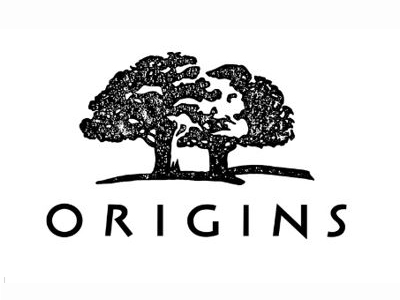
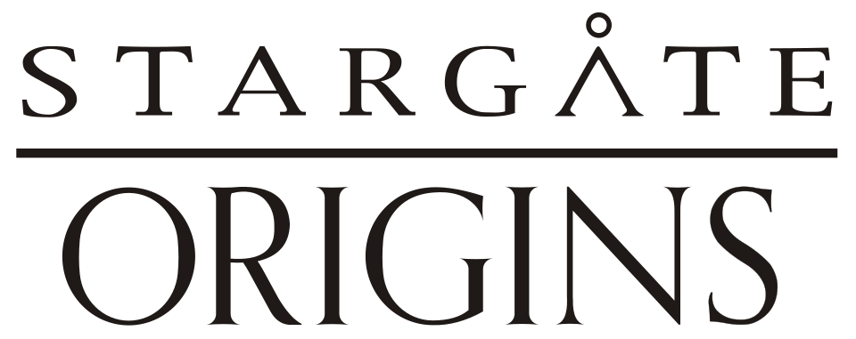

홈 > 브랜드 매거진 > 오리진스
오리진스
오리진스(Origins)는 에스티로더가 1990년 출범시킨 미국의 자연주의 스킨케어 브랜드이다.
산업 분야 뷰티·퍼스널케어 · 공개 등급 자료 기반 · 브랜드 평가 4.3 ★


한눈에 보는 브랜드
오리진스는 미국 에스티로더그룹이 1990년 선보인 자연주의 스킨케어 브랜드다. 창업주 에스티 로더의 손자인 윌리엄 로더가 초대 책임자를 맡아 사업을 이끌며, 식물 과학과 첨단 기술을 결합한 제품 철학을 세웠다.
식물·천연 추출물과 100퍼센트 천연 에센셜 오일을 배합하고, 재생지 포장과 동물성 원료 배제를 초기부터 내세운 점이 특징이다. 매스티지 가격대로 출발해 현재 전 세계 약 20개국에 진출했고 1,400여 개 매장을 운영한다.
브랜드 관점
오리진스의 차별점은 식물 추출물 중심 처방과 친환경 패키지를 그룹 차원의 과학력과 묶은 데 있다. 비슷한 자연주의 매스티지인 키엘이 보다 프리미엄 가격대를 유지하고, 러쉬가 생협 매장형 핸드메이드 콘셉트로 가는 반면, 오리진스는 백화점 카운터와 디지털 채널을 오가는 중간 포지션을 택했다.
신규 처방은 최소 90퍼센트 천연 유래, 전 제품 비건을 표방하고 인증 팜오일·미세플라스틱 배제를 약속해 클린뷰티 흐름에 대응한다. 에스티로더그룹 안에서는 라메르·에스티로더 본 라인보다 진입 장벽이 낮은 입문 가치 제안을 담당해, 젊은 층을 그룹 생태계로 끌어들이는 역할을 한다.
한국에서는 2000년 진출 뒤 인삼·커피콩 성분 서사가 통했으나, 2023년 백화점 채널을 정리하며 디지털·멀티숍 중심으로 무게를 옮겼다.
시작과 성장
오리진스는 1990년 에스티로더그룹이 환경에 대한 소비자 관심에 응답해 별도 법인으로 출범시켰고, 창업주의 손자 윌리엄 로더가 1990년부터 1998년까지 부사장과 사장을 거치며 브랜드를 직접 키웠다. 미국 케임브리지와 맨해튼 소호의 독립 부티크가 초기 최다 판매처로 떠올랐고, 매장 안 매장 형태를 도입하며 당시 미국 화장품 기업 중 가장 빠른 성장세를 기록했다.
이후 인삼과 커피콩을 담은 진징 아이크림이 부기·다크서클 케어 수요를 잡으며 대표 품목으로 올라섰고, 자기 전 바르는 드링크업 인텐시브 오버나이트 마스크가 수분 카테고리 히트작이 되었다. 30여 년에 걸쳐 20여 개국으로 무대를 넓혔으며, 그린 더 플래닛 미션을 내걸고 재생지 포장과 팜오일 인증, 패키지 전면 개선 같은 친환경 캠페인을 전개해 왔다.
브랜드 아이덴티티
오리진스의 가치관은 자연 성분의 효능을 과학으로 입증하고 지구에 부담을 덜 주는 책임 있는 뷰티에 있다. 로고는 군더더기 없는 영문 워드마크에 초록 계열 톤과 잎·식물 모티프를 더해, 식물성과 청정함이라는 정체성을 시각으로 전한다.
타깃은 천연 유래 성분과 친환경 패키지를 따지면서도 합리적 가격을 원하는 이삼십 대 중심 소비자다. 브랜드 보이스는 인삼·커피콩·버섯 같은 원료 이야기를 친근하고 감각적인 어조로 풀어내, 전문적이되 위압적이지 않은 균형을 지향한다.
제품과 서비스
대표 라인은 인삼과 커피콩으로 부기와 다크서클을 다스리는 진징 아이크림, 밤사이 수분을 채우는 드링크업 인텐시브 오버나이트 마스크, 순한 거품 세안제 체크 앤 밸런스다. 가격대는 세안제가 약 3만원, 드링크업 마스크가 용량에 따라 약 2만원에서 4만원대로 매스티지 구간에 자리한다.
유통은 백화점과 멀티 뷰티숍, 자사몰, 그리고 2025년 새로 연 아마존 프리미엄 뷰티 채널을 아우른다.
현재 상태
오리진스의 모회사는 미국 에스티로더그룹으로, 본사는 뉴욕 맨해튼 미드타운에 있다. 외부 추정 연매출은 약 1억 2,500만 달러 수준으로 거론되나, 그룹은 브랜드별 매출과 영업이익을 따로 공개하지 않아 정확한 단독 실적은 미공개다.
2025년 미국과 캐나다 아마존 프리미엄 뷰티에 잇따라 입점하며 디지털 유통을 넓히는 한편, 90퍼센트 이상 천연 유래·전 제품 비건 처방과 패키지 친환경 개선을 이어가고 있다.
타임라인
BI/CI 변천사
함께 읽을 브랜드
 뷰티·퍼스널케어 · 매거진 완성러쉬
뷰티·퍼스널케어 · 매거진 완성러쉬러쉬는 영국의 뷰티·퍼스널케어 브랜드로, 성분, 사용감, 패키지, 이미지 언어가 구매 판단에 직접 연결되는 영역입니다.
뷰티·퍼스널케어 · 자료 기반키엘키엘(Kiehl's)은 1851년 미국 뉴욕에서 약방으로 출발한 스킨케어 브랜드다. 옛 약제상(apothecary) 헤리티지를 바탕으로 한 미니멀한 제품으로 알려졌으...
 뷰티·퍼스널케어 · 자료 기반에스티 로더
뷰티·퍼스널케어 · 자료 기반에스티 로더에스티 로더(Estée Lauder)는 1946년 미국에서 창립된 프레스티지 화장품 브랜드이자 글로벌 뷰티 그룹이다.
 뷰티·퍼스널케어 · 자료 기반이니스프리
뷰티·퍼스널케어 · 자료 기반이니스프리이니스프리(Innisfree)는 아모레퍼시픽이 2000년 론칭한 대한민국의 자연주의 뷰티 브랜드다. 제주 원료를 내세운 스킨케어·색조로 아모레퍼시픽 자연주의 1호 브...
 뷰티·퍼스널케어 · 자료 기반달바
뷰티·퍼스널케어 · 자료 기반달바달바(d'Alba)는 달바글로벌이 전개하는 대한민국의 프리미엄 비건 스킨케어 브랜드다. 2016년 론칭했으며 화이트 트러플 성분의 미스트 세럼으로 글로벌 베스트셀러를...
 뷰티·퍼스널케어 · 편집 검수니베아
뷰티·퍼스널케어 · 편집 검수니베아니베아(NIVEA)는 1911년 독일 바이어스도르프(Beiersdorf)가 출시한 글로벌 스킨케어 브랜드다. 세계 최초의 안정적인 유중수(油中水) 유화 크림을 선보이...
 뷰티·퍼스널케어 · 편집 검수도브
뷰티·퍼스널케어 · 편집 검수도브도브(Dove)는 유니레버가 1957년 출시한 비누·바디케어 퍼스널케어 브랜드이다.
 뷰티·퍼스널케어 · 자료 기반더페이스샵
뷰티·퍼스널케어 · 자료 기반더페이스샵더페이스샵(The Face Shop)은 LG생활건강 계열의 자연주의 로드숍 화장품 브랜드로, 2003년 론칭했다.